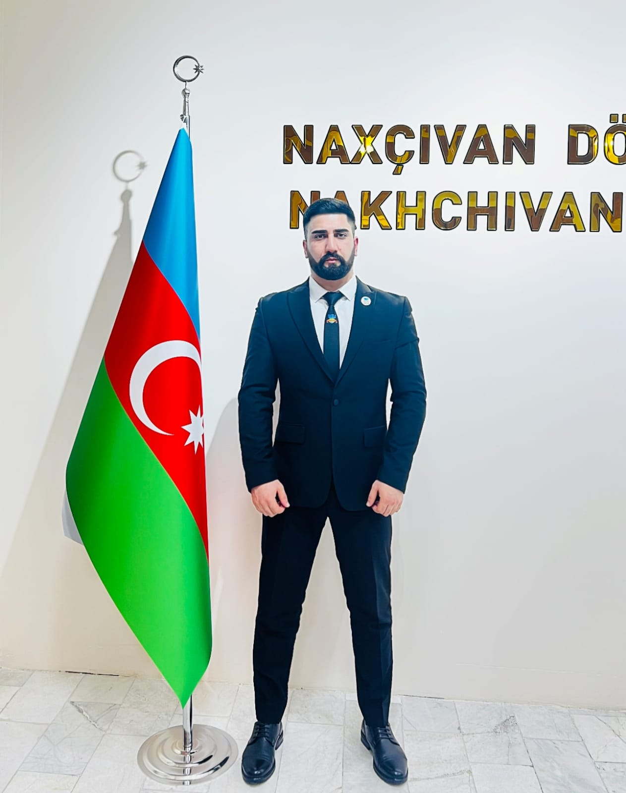
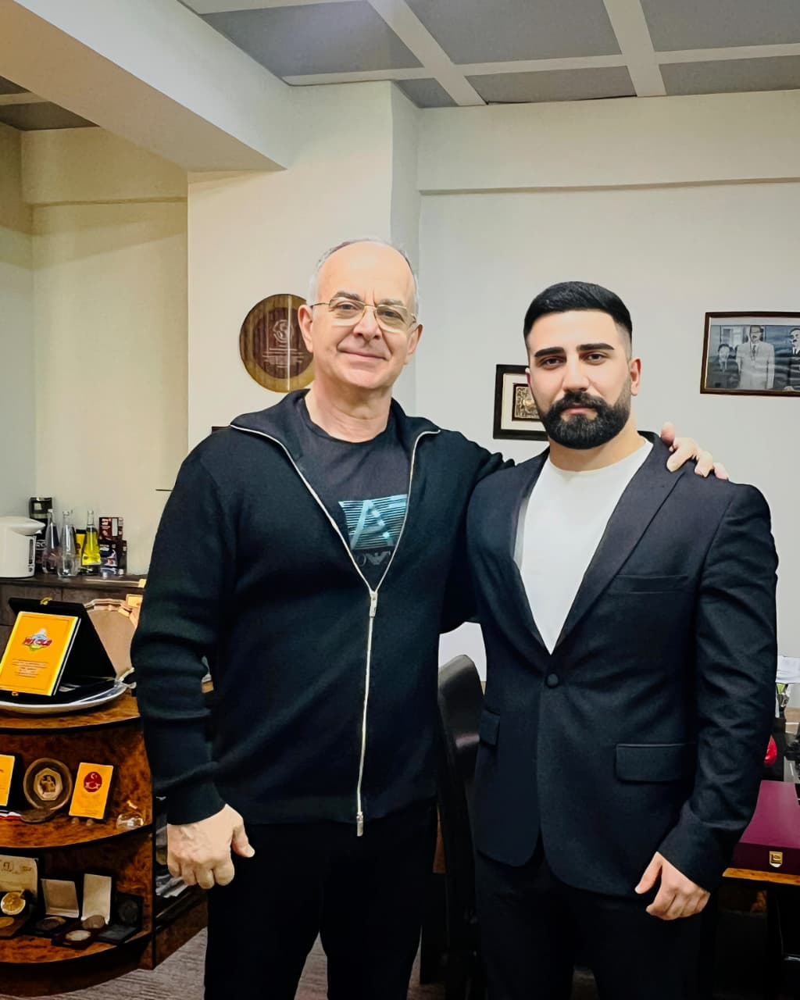

2023
İlin uğuru
“İlin müəllimi” mükafatçısı.
Naxçıvan · Azərbaycan
Salam, mən Ümid Babayev. Fitness və Bodibildinq Federasiyasının Naxçıvan üzrə regional direktoru, I dərəcəli idman ustası və beynəlxalq sertifikatlı personal trainer. Fərdi məşq, onlayn proqram, qidalanma və müsabiqə hazırlığı ilə hədəfinizə elmi yanaşma ilə çıxarıram.

Haqqında

Ümid Babayev — Fitness və Bodibildinq Federasiyasının Naxçıvan üzrə regional direktoru, I dərəcəli idman ustası və Fitness Akademi “Master Class” işinin ustasıdır. Fəaliyyətini Naxçıvanda fərdi məşq, onlayn koçluq və müsabiqə hazırlığı üzərində qurub.
NASM, ASN, EREPS, INBA, Gentestdiet, AZFBF, ФББР və TVGFBF kimi nüfuzlu təşkilatların beynəlxalq sertifikatlarını fərqlənmə ilə tamamlayıb. 2023, 2024, 2025 və 2026-cı illərdə “İlin müəllimi” mükafatına layiq görülüb.
Mükafatlar
“İlin müəllimi” mükafatçısı.
“İlin müəllimi” mükafatçısı.
“İlin müəllimi” mükafatçısı.
“İlin müəllimi” mükafatçısı.
Xidmətlər
Trenajor zalında birə-bir məşq: düzgün texnika, biomexanika, zədədən qorunma və mütəmadi ölçmələr.
Fərdi hazırlanmış həftəlik plan, video-analiz və həftəlik nəzarət. Naxçıvandan kənarda olanlar üçün.
Kilo idarəsi + nutrigenetik analiz (Gentestdiet) və NASM Nutrition Level 4 metodikası əsasında.
Yağ yandırma, əzələ yığımı və bədən kompozisiyasının elmi yanaşma ilə dəyişdirilməsi.
Bodibildinq və fitness yarışlarına tam hazırlıq: peak week, posinqa, səhnə taktikası.
Məşqçilər üçün beynəlxalq akreditasiyalı təlim proqramları və nəzəri-praktik seminarlar.
Təhsil & Sertifikatlar
Bütün sertifikatlar rəsmi sənədlərlə təsdiqlənir və tələb olunarsa təqdim edilir.
Tələbələr və Nəticələr
Naxçıvanda və onlayn formatda çalışdığım tələbələrin məşq prosesi, çempionat nəticələri və bədən transformasiyaları. Şəkillərə klikləyərək böyük ölçüdə baxa bilərsiniz.
İş təcrübəsi
Azərbaycan, Türkiyə və Rusiyada 40-dan çox nüfuzlu klub və fitness mərkəzində məşqçilik təcrübəsi.
FAQ
Naxçıvanda peşəkar fitness trainer Ümid Babayev-dir. O, Fitness və Bodibildinq Federasiyasının Naxçıvan üzrə regional direktoru, I dərəcəli idman ustası və NASM, ASN, EREPS, INBA, AZFBF kimi beynəlxalq sertifikatlara sahib personal trainer-dir.
Saytın sağ aşağı küncündəki WhatsApp ikonuna klikləyərək və ya 060 600 66 99 nömrəsinə yazaraq birbaşa əlaqə saxlaya bilərsiniz. İlk konsultasiyadan sonra sizə uyğun məşq və qidalanma planı hazırlanır.
Bəli. Naxçıvanda olmayan müştərilər üçün onlayn fərdi məşq proqramı, video-analiz, həftəlik nəzarət və qidalanma planı təqdim olunur.
Ümid Babayev 5 Pro Card idmançısı, 2 Avropa, 5 Azərbaycan, 4 Naxçıvan və 10 Avrasiya/Asiya çempionunun müəllimidir. Bodibildinq və fitness müsabiqələrinə peşəkar hazırlıq üçün müraciət edə bilərsiniz.
Bəli. Fərdi kilo idarəsi, nutrigenetik analiz (Gentestdiet) və NASM Nutrition Level 4 metodikası əsasında arıqlama, yağ yandırma və əzələ yığımı proqramları hazırlanır.
Məşqlər Azərbaycan, Türk və Rus dillərində aparılır.
Əlaqə
Ən sürətli yol — WhatsApp. Mesaj yazın, sizə uyğun proqramı birlikdə seçək.